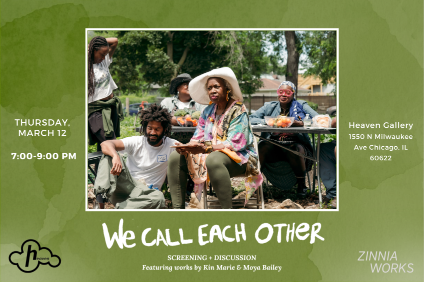

We Call Each Other
Join us for the screening and discussion of Sarah O’s film “We Call Each Other.” Featuring two more works by Kin Marie and Moya Bailety!
“We Call Each Other,” explores what happens when a life-changing theft takes place in The Community already facing man-made drought & environmental injustice (trailer here). Intercut with real-life interviews with family friends of director Sarah Oberholtzer, the film centers characters who learn how to build relationships with each other to address a criminal conflict.
“Everything is Everything” by Kin Marie is a conversational-style documentary that explores the heartfelt commemorations of Juneteenth by Chicago natives during the summer of 2024. This is Kin Marie’s sixth film for the Filmmaker’s Mixtape Challenge, led by Briana Clearly.
“You Just Watch and See” by Moya Bailey chronicles Dollie’s life from girlhood to achieving her twin dreams of becoming a professional woman and traveling the world.